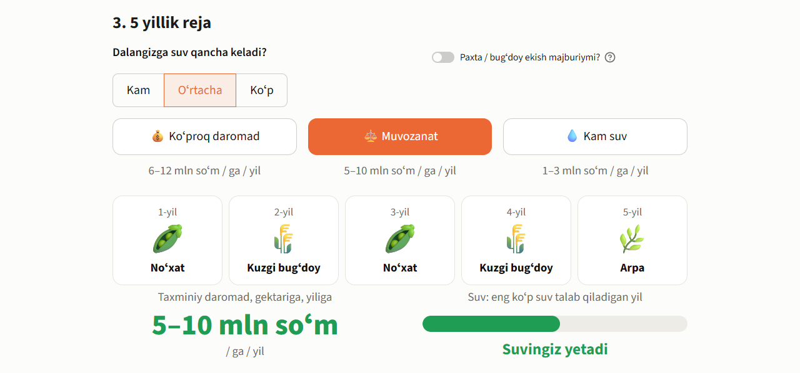
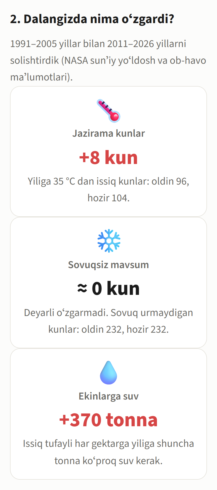
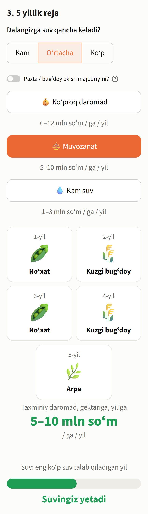

Don't just choose the most profitable crop for this year.
Choose the best five-year future for your field.
Challenge: Field Shift: Adapting Farms with NASA Data
NASA Space Apps Challenge 2026 · Karshi local event
[TEAM NAME]
[MEMBER 1] [MEMBER 2] [MEMBER 3]
[MEMBER 4] [MEMBER 5] [MEMBER 6]



Income in so'm per hectare per year, water as a green / amber / red bar, one plain reason per crop. Experts and judges get every number in a separate tab.
| Source | What it answers | Status |
|---|---|---|
| NASA POWER (MERRA-2, CERES, IMERG) | 35 years of daily weather: heat days, frost dates, rain, reference crop water use (FAO-56 Penman-Monteith) | used |
| NASA SMAP root-zone soil moisture | How dry is the soil under each field right now? | requested, integrating |
| NASA ECOSTRESS ET / ESI | Is the crop water-stressed? Calibrates our water-need correction | requested, integrating |
| NASA/USGS HLS NDVI | How green is each field? (field-level differences) | requested, integrating |
| FAO-56 (method) · FAOSTAT yields & prices | Crop water need per crop; typical Uzbek yields and producer prices | non-NASA |
| Korzinka, Uzum Market · CBU exchange rate | Current retail prices (× 0.40 to farm gate), so'm per USD | non-NASA |
Must grow cotton at Karshi? Cotton needs ~12,940 m³/ha of water here, more than the 8,000 available, so no plan with cotton fits; DalaShift says so and shows the closest plan (in Fergana the obligation costs ~9 mln so'm/ha over 5 years).
[TEAM NAME]
[MEMBER 1] [MEMBER 2] [MEMBER 3]
[MEMBER 4] [MEMBER 5] [MEMBER 6]
Repo: [REPO LINK]
App: [APP LINK]